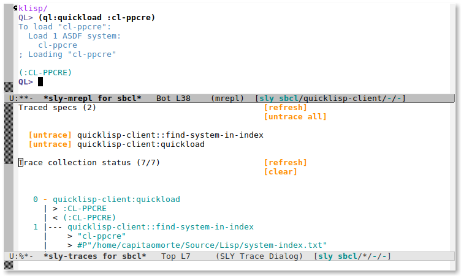
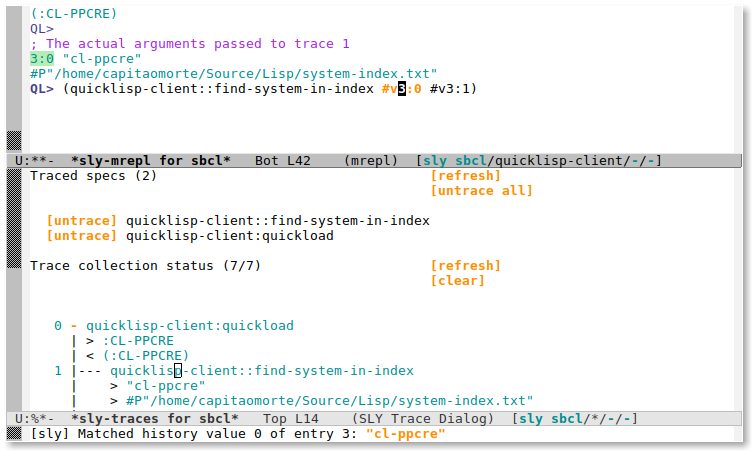
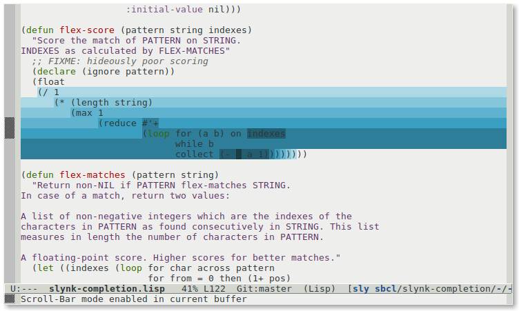
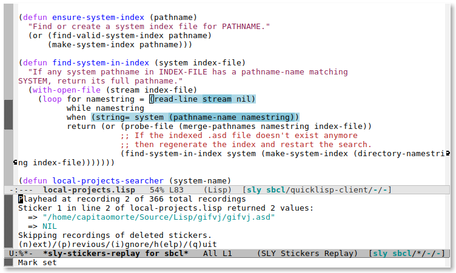
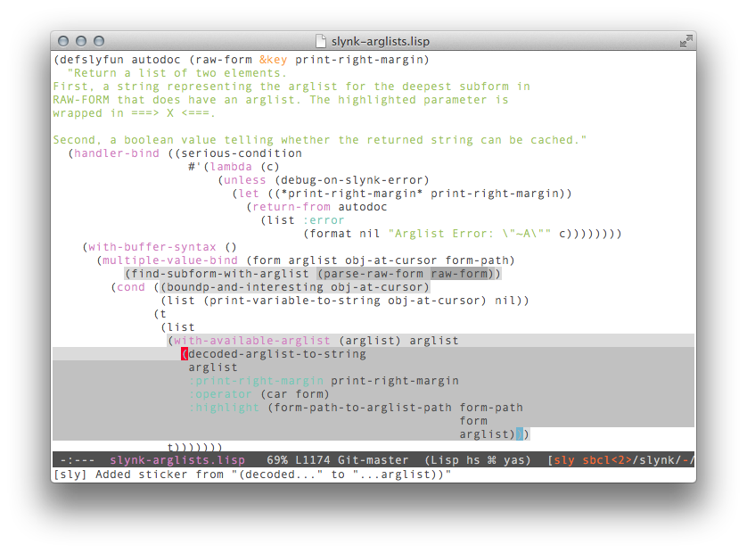
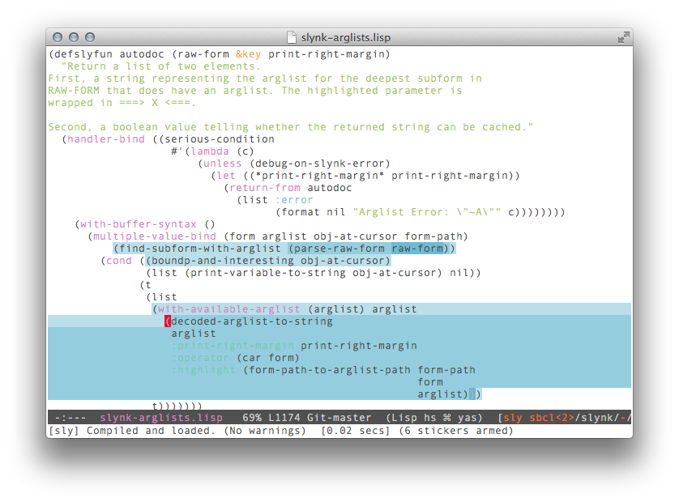
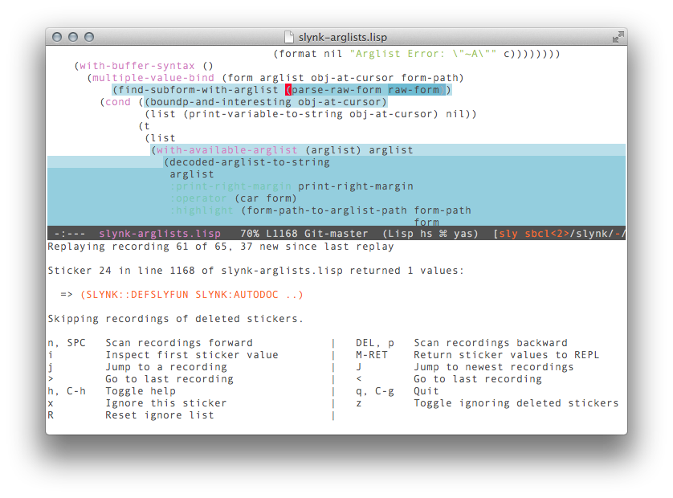
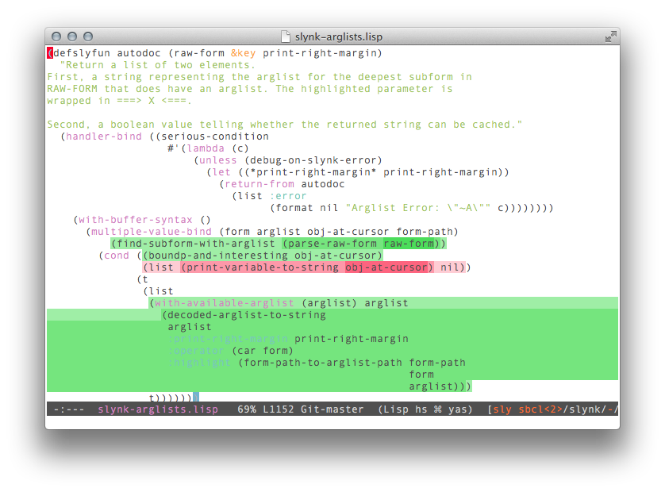

SLY
SLY is a Common Lisp IDE for Emacs. This is the manual for version
1.0.0-beta-2. (Last updated July 12, 2018)
Written for SLIME Luke Gorrie and others, rewritten by João
Távora for SLY.
This file has been placed in the public domain.
1. Introduction
SLY is Sylvester the Cat’s Common Lisp IDE. It extends Emacs with
support for interactive programming in Common Lisp.
The features are centered around an Emacs minor-mode called
sly-mode. It complements the standard major-mode
lisp-mode. While
lisp-mode supports editing Lisp source files, sly-mode
adds support for interacting with a running Common Lisp process for
compilation, debugging, documentation lookup, and so on.
SLY attempts to follow the example of Emacs’s own native Emacs-Lisp
environment. Many of the keybindings and interface concepts used to
interact with Emacs’s Elisp machine are reused in SLY to interact
with the underlying Common Lisp processes, and request from these
processes that they compile files, code snippets and introspection
information about objects in the Lisp run-time.
Internally, SLY’s user-interface, which is written in Emacs Lisp,
is connected via sockets to one or more instances of a server program
called “Slynk” that is running in the Lisp processes.
Emacs makes requests to this server using an RPC-like
protocol. The Lisp-side server is primarily written in portable Common
Lisp but some needed non-standard functionality is provided
differently by each Lisp implementation (SBCL, CMUCL, Allegro, etc...)
using a well-defined interface. Each Lisp implementation provides a
separate implementation, making SLY readily portable.
SLY is a direct fork of SLIME, the Superior Lisp
Interaction Mode for Emacs, itself based on previous modes such
as SLIM and ILISP. If you already know
SLIME, SLY’s closeness to is immediately
apparent. However, where SLIME has traditionally focused on
the stability of its core functionality, SLY aims for a richer
feature set brought together by a consistent user interface.
To understand the differences between the two projects read
SLY’s NEWS.md
file. For a hand-on approach to these differences you might want to
A SLY tour for SLIME users.
2. Getting started
This chapter tells you how to get SLY up and running.
2.1 Supported Platforms
SLY supports a wide range of operating systems and Lisp
implementations. SLY runs on Unix systems, Mac OSX, and Microsoft
Windows. GNU Emacs versions 24.4 and above are supported. XEmacs
or Emacs 23 are notably not supported.
The supported Lisp implementations, roughly ordered from the
best-supported, are:
-
CMU Common Lisp (CMUCL), 19d or newer
-
Steel Bank Common Lisp (SBCL), 1.0 or newer
-
Clozure Common Lisp (CCL), version 1.3 or newer
-
LispWorks, version 4.3 or newer
-
Allegro Common Lisp (ACL), version 6 or newer
-
CLISP, version 2.35 or newer
-
Armed Bear Common Lisp (ABCL)
-
Scieneer Common Lisp (SCL), version 1.2.7 or newer
-
Embedded Common Lisp (ECL)
-
ManKai Common Lisp (MKCL)
-
Clasp
Most features work uniformly across implementations, but some are
prone to variation. These include the precision of placing
compiler-note annotations, XREF support, and fancy debugger
commands (like “restart frame”).
2.2 Downloading SLY
By far the easiest method for getting SLY up and running is using
Emacs’ package system configured to the popular MELPA repository. This
snippet of code should already be in your configuration:
| | (add-to-list 'package-archives
'("melpa" . "https://melpa.org/packages/"))
(package-initialize)
|
You should now be able to issue the command M-x package-install,
choose sly and have it be downloaded and installed
automatically. If you don’t find it in the list, ensure you
run M-x package-refresh-contents first.
In other situations, such as when developing SLY itself, you can
access the Git repository directly:
| | git clone https://github.com/joaotavora/sly.git
|
If you want to hack on SLY, use Github’s fork functionality
and submit a pull request. Be sure to first read the
CONTRIBUTING.md file first.
2.3 Basic setup
If you installed SLY from MELPA, it is quite possible that you
don’t need any more configuration, provided that SLY can find a
suitable Lisp executable in your PATH environment variable.
Otherwise, you need to tell it where a Lisp program can be found, so
customize the variable inferior-lisp-program (see section Defcustom variables) or add a line like this one to your Emacs initialization
file (‘$HOME/.emacs’ or ‘$HOME/.emacs.d/init.el’)
| | (setq inferior-lisp-program "/opt/sbcl/bin/sbcl")
|
After evaluating this, you should be able to execute M-x sly and
be greeted with a REPL.
If you cloned from the Git repository, you’ll have to add a couple
of more lines to your initialization file configuration:
| | (add-to-list 'load-path "~/dir/to/cloned/sly")
(require 'sly-autoloads)
|
2.4 Running SLY
SLY can either ask Emacs to start its own Lisp subprocesss or
connect to a running process on a local or remote machine.
The first alternative is more common for local development and is
started via M-x sly. The “inferior” Lisp process thus started
is told to load the Lisp-side server known as “Slynk” and then a
socket connection is established between Emacs and Lisp. Finally
a REPL buffer is created where you can enter Lisp expressions for
evaluation.
The second alternative uses M-x sly-connect. This assumes that
that a Slynk server is running on some local or remote host, and
listening on a given port. M-x sly-connect prompts the user for
these values, and upon connection the REPL is established.
2.5 Basic customization
A big part of Emacs, and Emacs’s extensions, are its near-infinite
customization possibilities. SLY is no exception, because it runs
on both Emacs and the Lisp process, there are layers of Emacs-side
customization and Lisp-side customization. But don’t be put off by
this! SLY tries hard to provide sensible defaults that don’t
“hide” any fanciness beneath layers of complicated code, so that
even a setup with no customization at all exposes SLY’s most
important functionality.
Emacs-side customization is usually done via Emacs-lisp code snippets
added to the user’s initialization file, usually ‘$HOME/.emacs’ or
‘$HOME/.emacs.d/init.el’. 90% of Emacs-lisp customization happens
in either “keymaps” or “hooks” (see section Emacs-side). Still on the
Emacs side, there is also a separate interface, appropriately
called customize (or sometimes just custom), that uses a
nicer UI with mouse-clickable buttons to set some special
variables. See See section Defcustom variables.
Lisp-side customization is done exclusively via Common Lisp code
snippets added to the user’s ‘$HOME/.slynkrc’
file. See See section Lisp-side (Slynk).
As a preview, take this simple example of a frequently customized part of
SLY: its keyboard shortcuts, known as “keybindings”. In the
following snippet M-h is added to sly-prefix-map thus
yielding C-c M-h as a shortcut to
the sly-documentation-lookup command.
| | (eval-after-load 'sly
`(define-key sly-prefix-map (kbd "M-h") 'sly-documentation-lookup))
|
2.6 Multiple Lisps
By default, the command M-x sly starts the program specified
with inferior-lisp-program, a variable that you can customize
(see section Defcustom variables). However, if you invoke M-x sly
with a prefix argument, meaning you type C-u M-x sly then
Emacs prompts for the program which should be started instead.
If you need to do this frequently or if the command involves long
filenames it’s more convenient to set
the sly-lisp-implementations variable in your initialization
file, usually ‘.emacs’ or ‘~/.emacs.d/init.el’. For example
here we define two programs:
| | (setq sly-lisp-implementations
'((cmucl ("cmucl" "-quiet"))
(sbcl ("/opt/sbcl/bin/sbcl") :coding-system utf-8-unix)))
|
Now, if you invoke SLY with a negative prefix argument,
M-- M-x sly, you can select a program from that list. When
called without a prefix, either the name specified in
sly-default-lisp, or the first item of the list will be used.
The elements of the list should look like
| | (NAME (PROGRAM PROGRAM-ARGS...) &key CODING-SYSTEM INIT INIT-FUNCTION ENV)
|
-
NAME
is a symbol and is used to identify the program.
-
PROGRAM
is the filename of the program. Note that the filename can contain
spaces.
-
PROGRAM-ARGS
is a list of command line arguments.
-
CODING-SYSTEM
the coding system for the connection. (see sly-net-coding-system)x
-
INIT
should be a function which takes two arguments: a filename and a
character encoding. The function should return a Lisp expression as a
string which instructs Lisp to start the Slynk server and to write the
port number to the file. At startup, SLY starts the Lisp process
and sends the result of this function to Lisp’s standard input. As
default, sly-init-command is used. An example is shown in
Loading Slynk faster.
-
INIT-FUNCTION
should be a function which takes no arguments. It is called after
the connection is established. (See also sly-connected-hook.)
-
ENV
specifies a list of environment variables for the subprocess. E.g.
| | (sbcl-cvs ("/home/me/sbcl-cvs/src/runtime/sbcl"
"--core" "/home/me/sbcl-cvs/output/sbcl.core")
:env ("SBCL_HOME=/home/me/sbcl-cvs/contrib/"))
|
initializes SBCL_HOME in the subprocess.
3. A SLY tour for SLIME users
The chances are that if you’re into Common Lisp, you already know
about SLIME, the project that originated SLY. Itself originating
in older Emacs extensions SLIM and ILISP, SLIME
has been around for at least a decade longer than SLY and is quite
an amazing IDE. It seems reasonable to assume that most Lispers have
some experience with it, and perhaps it is an even more reasonable
idea to provide, in the form of a quick tutorial, a hands-on overview
of some of the improvements of SLY over SLIME.
When you start SLY with M-x sly (see section Basic setup) you are
greeted with its REPL, a common starting point of Lisp hacking
sessions. This has been completely redesigned in SLY. You can spawn
multiple REPL sessions with sly-mrepl-new, copy objects from most
places directly into it (with M-RET and M-S-RET), and use a
much more powerful incremental history search engine (with C-r).

Starting from the REPL, let’s showcase some of SLY’s new features.
let’s pretend we want to hack an existing Lisp project, say SLY
itself, or rather a part of its Lisp server which is called Slynk. Let’s
pretend we’re intrigued by the way its “flex”-style completion
works. What is “flex”-style completion, you ask? Well, if you’re at
the REPL you can try it now: it’s a way of TAB-completing
(see section Auto-completion) symbol names based on educated guesses of a few
letters. Thus if we type mvbind, SLY guesses that we probably
meant multiple-value-bind, and if we type domat it might
possibly guess cl-ppcre:do-matches. Let’s dig into the code that
lets this happen.
Where to start, assuming we know very little about this project? Well, a
good point to start is always SLY’s apropos functionality, which
is a grep of sorts, but symbolic rather than purely textual. So
if we want to hack on SLY’s “flex-completion”, a reasonable search
string is probably sly.*flex. So we type C-c C-d C-z (a
shortcut for M-x sly-apropos-all) and then type in that search
string at the prompt, followed by enter or return
(abbreviated RET or C-m).
Notice that we’ve just entered a regular-expression in
SLY’s apropos prompt, something that regular
Lisp apropos search doesn’t normally allow. SLY does, but
there’s a quirk: it needs access to a regular expression library, so by
now you may or may not have results in a *sly-apropos* buffer! If
you don’t, SLY will advise you to load the (very
popular) cl-ppcre regular expression system. Assuming you have
Quicklisp (you do know about Quicklisp, right?) that’s a matter
of typing (ql:quickload :cl-ppcre) RET in the REPL, waiting some
brief moments, and then trying the C-c C-d C-z apropos search
again. If everything goes to plan, SLY should now present all Lisp
symbols that match the sly.*flex regular expression.

In the apropos buffer, let’s examine, by right-clicking it, the
symbol SLY-COMPLETIONS:FLEX-COMPLETIONS. We’ll be presented
with a context menu with options for describing the symbol, inspecting
it, or navigating to its source definition. In general, the Lisp-side
objects that SLY presents — symbols, CLOS objects, function calls,
etc... — are right-clickable buttons with a such a context menu
(see section Interactive objects). For now, let’s navigate to the source
definition of the symbol by choosing “Go To source” from the
menu. We could also have just pressed M-. on the symbol, of
course.
From the Lisp source buffer that we landed on (probably
‘sly-completion.lisp’), let’s trace the newly found
function SLY-COMPLETIONS:FLEX-COMPLETIONS. However, instead of
using the regular CL:TRACE, we’ll use SLY’s “Trace Dialog”
functionality. So let’s first type C-c C-t on the function’s
name (or enter that in the minibuffer prompt). Afterwards, we can now
open the trace dialog in a new window by typing C-c T (that’s a
capital T), and we should already see our traced function under
“Traced specs”. Thirdly, for good measure, let’s also trace the
nearby function SLY-COMPLETIONS::FLEX-SCORE by also
typing C-c C-t on its name, or just entering it in the
minibuffer prompt.
Now let’s return to the REPL by switching to its
*sly-mrepl ... buffer or typing C-c C-z. In the REPL, let’s try to
complete some typical Lisp string by typing just desbind and then
typing TAB. We should see a window popup including the desired
completion destructuring-bind (it should also be the top
match). Of course, we could now select some completion from the list,
but instead let’s just type C-g to dismiss
the *sly-completions* window, since what we wanted to test
completion, not write any actual destructuring-bind expression.
Remember the traced functions? Let’s see if we got any traces: let’s
type C-c T and then capital G in the *sly-traces*
buffer. This should produce a fair number of traces organized in a
call graph.

We can later learn more about this mode (see section Trace Dialog), but for
now let’s again pretend we expected the function FLEX-SCORE to
return a wildly different score for
COMMON-LISP:DESTRUCTURING-BIND. But if we want to
witness FLEX-SCORE respond to any implementation improvements
later on, we probably want to be able to surgically re-run that function
with those very same arguments, so that we can witness . To do this,
let’s find the function call in the Trace Dialog window, right-click it
with the mouse and select “Copy call to REPL”. As an alternative,
pressing M-S-RET on it also works. When we do this we are
automatically transported to the REPL again, where the desired function
call has already been typed out for us at the command prompt, awaiting a
confirmation RET. The call may look strange, though:
| | ; The actual arguments passed to trace 15
"desbind"
"COMMON-LISP:DESTRUCTURING-BIND"
(12 13 14 26 27 28 29)
SLYNK-COMPLETION> (slynk-completion::flex-score #v1:0 #v1:1 #v1:2)
0.003030303 (0.30303028%)
SLYNK-COMPLETION>
|

So here’s what’s going on: To copy the call to the REPL, SLY first
copied over its actual arguments, and then wrote the function using
special backreferences to those arguments in the correct
place. These are the #v4:0 and #v4:1 bits seen at the
command prompt. Let’s go ahead and put the cursor on them, to see how
this makes them highlight the corresponding object a few lines above in
the buffer (later, you can also try typing “#v” at the REPL to see
what happens). Finally, typing RET should run the function call.
For one final demonstration, let’s now suppose say we are still
intrigued by how that function works internally. So let’s navigate to
its definition using M-. again (or just open
the ‘sly-completion.lisp’ buffer that you probably still have
open). The function’s code might look like this:
| | (defun flex-score (pattern string indexes)
"Score the match of PATTERN on STRING.
INDEXES as calculated by FLEX-MATCHES"
;; FIXME: hideously naive scoring
(declare (ignore pattern))
(float
(/ 1
(* (length string)
(max 1
(reduce #'+
(loop for (a b) on indexes
while b
collect (- b a 1))))))))
|
Can this function be working correctly? What do all those expressions
return? Should we reach for good old C-style printf? Let’s try
“stickers”, which are a form of non-intrusive function
instrumentation that work like carefully crafted print or
(format t ...)), but are much easier to work with. You can
later read more about them (see section Stickers), but for now you can
just think of them as colorful labels placed on s-exp’s. Let’s place a
bunch here, like this: on the last line of flex-score, place
your cursor on the first open parenthesis of that line (the opening
parenthesis of the expression (- b a 1)) and press C-c C-s
C-s. Now do the same for the symbol indexes a couple of lines
above. Again, the same for the expressions (loop...),
(reduce...), (max...), (length...),
(*...), (/... ) and
(float...) (You could have done this in any order, by the way).
Now let’s recompile this definition with C-c C-c. Beside the
minibuffer note something about stickers being “armed” our function
should now look like a rainbow in blue.

Now we return to the SLY REPL, but this time let’s use C-c ~
(that’s C-c followed by “tilde”) to do so. This syncs the REPL’s
local package and local directory to the Lisp file that we’re
visiting. This is something not strictly necessary here but generally
convenient when hacking on a system, since you can call functions from
the file you came from without package-qualification. Now, to re-run
newly the instrumented function, by calling it with the same
arguments. But no need to type all that again, because this REPL
supports reverse history i-search, remember? So just type the
binding C-r and then type something like scor to search
history backwards and arrive at the function call copied to the REPL
earlier. Type RET once to confirm that call, and RET again
to evaluate it. Because those #v... backreferences are still
trained specifically on those very same function arguments, you can be
sure that the function call is equivalent.
We can now use the C-c C-s C-r to replayn the sticker
recordings of this last function call. This is a kind of slow
walk-through conducted in separate navigation window
called *sly-stickers-replay* which pops up. There we can see
the Lisp value(s) that each sticker eval’ed to each time (or a
note if it exited non-locally). We can navigate recordings
with n and p, and do the usual things allowed by
interactive objects like inspecting them and returning them to the
REPL. If you need help, toggle help by typing h. There are lots
of options here for navigating stickers, ignoring some stickers,
etc. When we’re done in this window, we press q to quit.

Finally, we declare that we’re finished debugging
FLEX-MATCHES. Even though stickers don’t get saved to the file
in any way, we decide we’re not interested in them anymore. So let’s
open the “SLY” menu in the menu bar, find the “Delete stickers from
top-level form” option under the “Stickers” sub-menu, and click
it. Alternatively, we could have typed C-u C-c C-s C-s.
4. Working with source files
SLY’s commands when editing a Lisp file are provided via
sly-editing-mode, a minor-mode used in conjunction with Emacs’s
lisp-mode.
This chapter describes SLY’s commands for editing and working in
Lisp source buffers. There are, of course, more SLY’s commands that
also apply to these buffers (see section Common functionality), but
with very few exceptions these commands will always be run from
a .lisp file.
4.1 Evaluating code
These commands each evaluate a Common Lisp expression in a different
way. Usually they mimic commands for evaluating Emacs Lisp code. By
default they show their results in the echo area, but a prefix
argument causes the results to be inserted in the current buffer.
- C-x C-e
- M-x sly-eval-last-expression
-
Evaluate the expression before point and show the result in the echo
area.
- C-M-x
- M-x sly-eval-defun
-
Evaluate the current toplevel form and show the result in the echo
area. ‘C-M-x’ treats ‘defvar’ expressions specially. Normally,
evaluating a ‘defvar’ expression does nothing if the variable it
defines already has a value. But ‘C-M-x’ unconditionally resets the
variable to the initial value specified in the ‘defvar’ expression.
This special feature is convenient for debugging Lisp programs.
If C-M-x or C-x C-e is given a numeric argument, it
inserts the value into the current buffer, rather than displaying it
in the echo area.
- C-c :
- M-x sly-interactive-eval
-
Evaluate an expression read from the minibuffer.
- C-c C-r
- M-x sly-eval-region
-
Evaluate the region.
- C-c C-p
- M-x sly-pprint-eval-last-expression
-
Evaluate the expression before point and pretty-print the result in a
fresh buffer.
- C-c E
- M-x sly-edit-value
-
Edit the value of a setf-able form in a new buffer ‘*Edit <form>*’.
The value is inserted into a temporary buffer for editing and then set
in Lisp when committed with C-c C-c.
- C-x M-e
- M-x sly-eval-last-expression-display-output
-
Display the output buffer and evaluate the expression preceding point.
This is useful if the expression writes something to the output stream.
- C-c C-u
- M-x sly-undefine-function
-
Undefine the function, with fmakunbound, for the symbol at
point.
4.2 Compiling functions and files
SLY has fancy commands for compiling functions, files, and
packages. The fancy part is that notes and warnings offered by the
Lisp compiler are intercepted and annotated directly onto the
corresponding expressions in the Lisp source buffer. (Give it a try to
see what this means.)
-
- C-c C-c
- M-x sly-compile-defun
-
Compile the top-level form at point. The region blinks shortly to
give some feedback which part was chosen.
With (positive) prefix argument the form is compiled with maximal
debug settings (C-u C-c C-c). With negative prefix argument it is compiled for
speed (M-- C-c C-c). If a numeric argument is passed set debug or speed settings
to it depending on its sign.
The code for the region is executed after compilation. In principle,
the command writes the region to a file, compiles that file, and loads
the resulting code.
This compilation may arm stickers (see section Stickers).
- C-c C-k
- M-x sly-compile-and-load-file
-
Compile and load the current buffer’s source file. If the compilation
step fails, the file is not loaded. It’s not always easy to tell
whether the compilation failed: occasionally you may end up in the
debugger during the load step.
With (positive) prefix argument the file is compiled with maximal
debug settings (C-u C-c C-k). With negative prefix argument it is compiled for
speed (M-- C-c C-k). If a numeric argument is passed set debug or speed settings
to it depending on its sign.
This compilation may arm stickers (see section Stickers).
- C-c M-k
- M-x sly-compile-file
-
Compile (but don’t load) the current buffer’s source file.
- C-c C-l
- M-x sly-load-file
-
Load a Lisp file. This command uses the Common Lisp LOAD function.
- M-x sly-compile-region
-
Compile the selected region.
This compilation may arm stickers (see section Stickers).
The annotations are indicated as underlining on source forms. The
compiler message associated with an annotation can be read either by
placing the mouse over the text or with the selection commands below.
- M-n
- M-x sly-next-note
-
Move the point to the next compiler note and displays the note.
- M-p
- M-x sly-previous-note
-
Move the point to the previous compiler note and displays the note.
- C-c M-c
- M-x sly-remove-notes
-
Remove all annotations from the buffer.
- C-x `
- M-x next-error
-
Visit the next-error message. This is not actually a SLY command
but SLY creates a hidden buffer so that most of the Compilation
mode commands (See (emacs)Compilation Mode) work similarly for
Lisp as for batch compilers.
4.3 Autodoc
SLY automatically shows information about symbols near the point. For
function names the argument list is displayed, and for global
variables, the value. Autodoc is implemented by means
of eldoc-mode of Emacs.
- M-x sly-arglist NAME
-
Show the argument list of the function NAME.
- M-x sly-autodoc-mode
-
Toggles autodoc-mode on or off according to the argument, and
toggles the mode when invoked without argument.
- M-x sly-autodoc-manually
-
Like sly-autodoc, but when called twice,
or after sly-autodoc was already automatically called,
display multiline arglist.
If sly-autodoc-use-multiline-p is set to non-nil,
allow long autodoc messages to resize echo area display.
autodoc-mode is a SLY extension and can be turned off if you
so wish (see section Extensions)
4.4 Semantic indentation
SLY automatically discovers how to indent the macros in your Lisp
system. To do this the Lisp side scans all the macros in the system and
reports to Emacs all the ones with &body arguments. Emacs then
indents these specially, putting the first arguments four spaces in and
the “body” arguments just two spaces, as usual.
This should “just work.” If you are a lucky sort of person you needn’t
read the rest of this section.
To simplify the implementation, SLY doesn’t distinguish between
macros with the same symbol-name but different packages. This makes it
fit nicely with Emacs’s indentation code. However, if you do have
several macros with the same symbol-name then they will all be indented
the same way, arbitrarily using the style from one of their
arglists. You can find out which symbols are involved in collisions
with:
| | (slynk:print-indentation-lossage)
|
If a collision causes you irritation, don’t have a nervous breakdown,
just override the Elisp symbol’s common-lisp-indent-function
property to your taste. SLY won’t override your custom settings, it
just tries to give you good defaults.
A more subtle issue is that imperfect caching is used for the sake of
performance. (1)
In an ideal world, Lisp would automatically scan every symbol for
indentation changes after each command from Emacs. However, this is too
expensive to do every time. Instead Lisp usually just scans the symbols
whose home package matches the one used by the Emacs buffer where the
request comes from. That is sufficient to pick up the indentation of
most interactively-defined macros. To catch the rest we make a full scan
of every symbol each time a new Lisp package is created between commands
– that takes care of things like new systems being loaded.
You can use M-x sly-update-indentation to force all symbols to
be scanned for indentation information.
4.5 Reader conditional fontification
SLY automatically evaluates reader-conditional expressions, like
#+linux, in source buffers and “grays out” code that will be
skipped for the current Lisp connection.
4.6 Macro-expansion commands
- C-c C-m
- M-x sly-expand-1
-
Macroexpand (or compiler-macroexpand) the expression at point
once. If invoked with a prefix argument use macroexpand instead or
macroexpand-1 (or compiler-macroexpand instead of
compiler-macroexpand-1).
- M-x sly-macroexpand-1
-
Macroexpand the expression at point once. If invoked with a prefix
argument, use macroexpand instead of macroexpand-1.
- C-c M-m
- M-x sly-macroexpand-all
-
Fully macroexpand the expression at point.
- M-x sly-compiler-macroexpand-1
-
Display the compiler-macro expansion of sexp at point.
- M-x sly-compiler-macroexpand
-
Repeatedy expand compiler macros of sexp at point.
Within a sly macroexpansion buffer some extra commands are provided
(these commands are always available but are only bound to keys in a
macroexpansion buffer).
- C-c C-m
- M-x sly-macroexpand-1-inplace
-
Just like sly-macroexpand-1 but the original form is replaced with
the expansion.
- g
- M-x sly-macroexpand-1-inplace
-
The last macroexpansion is performed again, the current contents of
the macroexpansion buffer are replaced with the new expansion.
- q
- M-x sly-temp-buffer-quit
-
Close the expansion buffer.
- C-_
- M-x sly-macroexpand-undo
-
Undo last macroexpansion operation.
5. Common functionality
This chapter describes the commands available throughout
SLY-enabled buffers, which are not only Lisp source buffers, but
every auxiliary buffer created by SLY, such as the REPL,
Inspector, etc (see section SLY REPL and other special buffers) In
general, it’s a good bet that if the buffer’s name starts with
*sly-...*, these commands and functionality will be available
there.
5.1 Finding definitions
One of the most used keybindings across all of SLY is the
familiar M-. binding for sly-edit-definition.
Here’s the gist of it: when pressed with the cursor over a symbol
name, that symbol’s name definition is looked up by the Lisp process,
thus producing a Lisp source location, which might be a file, or a
file-less buffer. For convenience, a type of “breadcrumb” is left
behind at the original location where M-. was pressed, so that
another keybinding M-, takes the user back to the original
location. Thus multiple M-. trace a path through lisp sources
that can be traced back with an equal number of M-,.
- M-.
- M-x sly-edit-definition
-
Go to the definition of the symbol at point.
- M-,
- M-*
- M-x sly-pop-find-definition-stack
-
Go back to the point where M-. was invoked. This gives multi-level
backtracking when M-. has been used several times.
- C-x 4 .
- M-x sly-edit-definition-other-window
-
Like sly-edit-definition but switches to the other window to
edit the definition in.
- C-x 5 .
- M-x sly-edit-definition-other-frame
-
Like sly-edit-definition but opens another frame to edit the
definition in.
The behavior of the M-. binding is sometimes affected by the
type of symbol you are giving it.
-
For single functions or variables, M-. immediately switches
the current window’s buffer and position to the target
defun or
defvar.
-
For symbols with more than one associated definition, say, generic
functions, the same M-. finds all methods and presents these
results in separate window displaying a special
*sly-xref*
buffer (see section Cross-referencing).
5.2 Cross-referencing
Finding and presenting the definition of a function is actually the
most elementary aspect of broader cross-referencing facilities
framework in SLY. There are other types of questions about the
source code relations that you can ask the Lisp process.(2)
The following keybindings behave much like the M-. keybinding
(see section Finding definitions): when pressed as is they make a query
about the symbol at point, but with a C-u prefix argument they
prompt the user for a symbol. Importantly, they always popup a
transient *sly-xref* buffer in a different window.
- M-?
- M-x sly-edit-uses
-
Find all the references to this symbol, whatever the type of that
reference.
- C-c C-w C-c
- M-x sly-who-calls
-
Show function callers.
- C-c C-w C-w
- M-x sly-calls-who
-
Show all known callees.
- C-c C-w C-r
- M-x sly-who-references
-
Show references to global variable.
- C-c C-w C-b
- M-x sly-who-binds
-
Show bindings of a global variable.
- C-c C-w C-s
- M-x sly-who-sets
-
Show assignments to a global variable.
- C-c C-w C-m
- M-x sly-who-macroexpands
-
Show expansions of a macro.
- M-x sly-who-specializes
-
Show all known methods specialized on a class.
There are two further “List callers/callees” commands that operate
by rummaging through function objects on the heap at a low-level to
discover the call graph. They are only available with some Lisp
systems, and are most useful as a fallback when precise XREF
information is unavailable.
- C-c <
- M-x sly-list-callers
-
List callers of a function.
- C-c >
- M-x sly-list-callees
-
List callees of a function.
In the resulting *sly-xref* buffer, these commands are
available:
- RET
- M-x sly-show-xref
-
Show definition at point in the other window. Do not leave
the *sly-xref buffer.
- Space
- M-x sly-goto-xref
-
Show definition at point in the other window and close
the *sly-xref buffer.
- C-c C-c
- M-x sly-recompile-xref
-
Recompile definition at point.
- C-c C-c
- M-x sly-recompile-all-xrefs
-
Recompile all definitions.
5.3 Auto-completion
Completion commands are used to complete a symbol or form based on
what is already present at point. Emacs has many completion mechanisms
that SLY tries to mimic as much as possible.
SLY provides two styles of completion. The choice between them happens
in the Emacs customization variable
see sly-complete-symbol-function, which can be set to two values,
or methods:
-
sly-flex-completions
This method is speculative. It assumes that the letters you’ve already
typed aren’t necessarily an exact prefix of the symbol you’re thinking
of. Therefore, any possible completion that contains these letters, in
the order that you have typed them, is potentially a match. Completion
matches are then sorted according to a score that should reflect the
probability that you really meant that them.
Flex completion implies that the package-qualification needed to
access some symbols is automatically discovered for you. However, to
avoid searching too many symbols unnecessarily, this method makes some
minimal assumptions that you can override: it assumes, for example,
that you don’t normally want to complete to fully qualified internal
symbols, but will do so if it finds two consecutive colons (::)
in your initial pattern. Similarly, it assumes that if you start a
completion on a word starting :, you must mean a keyword (a
symbol from the keyword package.)
Here are the top results for some typical searches.
| | CL-USER> (quiloa<TAB>) -> (ql:quickload)
CL-USER> (mvbind<TAB>) -> (multiple-value-bind)
CL-USER> (scan<TAB>) -> (ppcre:scan)
CL-USER> (p::scan<TAB>) -> (ppcre::scanner)
CL-USER> (setf locadirs<TAB>) -> (setf ql:*local-project-directories*)
CL-USER> foobar -> asdf:monolithic-binary-op
|
-
sly-simple-completions
This method uses “classical” completion on an exact prefix. Although
poorer, this is simpler, more predictable and closer to the default
Emacs completion method. You type a prefix for a symbol reference and
SLY let’s you choose from symbols whose beginnings match it
exactly.
As an enhancement in SLY over Emacs’ built-in completion styles,
when the *sly-completions* buffer pops up, some keybindings are
momentarily diverted to it:
- C-n
- <down>
- M-x sly-next-completion
-
Select the next completion.
- C-p
- <up>
- M-x sly-prev-completion
-
Select the previous completion.
- tab
- RET
- M-x sly-choose-completion
-
Choose the currently selected completion and enter it at point.
As soon as the user selects a completion or gives up by
pressing C-g or moves out of the symbol being completed, the
*sly-completions* buffer is closed.
5.4 Interactive objects
In many buffers and modes in SLY, there are snippets of text that
represent objects “living” in the Lisp process connected to SLY.
These regions are known in SLY as interactive values or objects.
You can tell these objects from regular text by their distinct
“face”, is Emacs parlance for text colour, or decoration. Another
way to check if bit of text is an interactive object is to hover above
it with the mouse and right-click (<mouse-3>) it: a context menu
will appear listing actions that you can take on that object.
Depending on the mode, different actions may be active for different
types of objects. Actions can also be invoked using keybindings active
only when the cursor is on the button.
- M-RET, ``Copy to REPL''
-
Copy the object to the main REPL (See section REPL output and See section REPL backreferences).
- M-S-RET, ``Copy call to REPL''
-
An experimental feature. On some backtrace frames in the Debugger
(see section The SLY-DB Debugger) and Trace Dialog (see section Trace Dialog), copy
the object to the main REPL. That’s meta-shift-return, by
the way, there’s no capital “S”.
- .,''Go To Source''
-
For function symbols, debugger frames, or traced function calls, go to
the Lisp source, much like with M-..
- v,''Show Source''
-
For function symbols, debugger frames, or traced function calls, show
the Lisp source in another window, but don’t switch to it.
- p,''Pretty Print''
-
Pretty print the object in a separate buffer, much
like sly-pprint-eval-last-expression.
- i,''Inspect''
-
Inspect the object in a separate inspector buffer (see section The Inspector).
- d,''Describe''
-
Describe the object in a separate buffer using Lisp’s
CL:DESCRIBE.
5.5 Documentation commands
SLY’s online documentation commands follow the example of Emacs
Lisp. The commands all share the common prefix C-c C-d and allow
the final key to be modified or unmodified (see section Keybindings.)
- M-x sly-info
-
This command should land you in an electronic version of this very
manual that you can read inside Emacs.
- C-c C-d d
- M-x sly-describe-symbol
-
Describe the symbol at point.
- C-c C-d f
- M-x sly-describe-function
-
Describe the function at point.
- C-c C-d C-a
- M-x sly-apropos
-
Perform an apropos search on Lisp symbol names for a regular expression
match and display their documentation strings. By default the external
symbols of all packages are searched. With a prefix argument you can choose a
specific package and whether to include unexported symbols.
- C-c C-d C-z
- M-x sly-apropos-all
-
Like sly-apropos but also includes internal symbols by default.
- C-c C-d C-p
- M-x sly-apropos-package
-
Show apropos results of all symbols in a package. This command is for
browsing a package at a high-level. With package-name completion it
also serves as a rudimentary Smalltalk-ish image-browser.
- C-c C-d C-h
- M-x sly-hyperspec-lookup
-
Lookup the symbol at point in the Common Lisp Hyperspec. This
uses the familiar ‘hyperspec.el’ to show the appropriate section
in a web browser. The Hyperspec is found either on the Web or in
common-lisp-hyperspec-root, and the browser is selected by
browse-url-browser-function.
Note: this is one case where C-c C-d h is not the same as
C-c C-d C-h.
- C-c C-d ~
- M-x hyperspec-lookup-format
-
Lookup a format character in the Common Lisp Hyperspec.
- C-c C-d #
- M-x hyperspec-lookup-reader-macro
-
Lookup a reader macro in the Common Lisp Hyperspec.
5.6 Multiple connections
SLY is able to connect to multiple Lisp processes at the same
time. The M-x sly command, when invoked with a prefix
argument, will offer to create an additional Lisp process if one is
already running. This is often convenient, but it requires some
understanding to make sure that your SLY commands execute in the
Lisp that you expect them to.
Some SLY buffers are tied to specific Lisp processes. It’s easy
read that from the buffer’s name which will usually be
*sly-<something> for <connection>*, where connection is
the name of the connection.
Each Lisp connection has its own main REPL buffer
(see section SLY REPL: the “top level”), and all expressions entered or SLY commands invoked
in that buffer are sent to the associated connection. Other buffers
created by SLY are similarly tied to the connections they originate
from, including SLY-DB buffers (see section The SLY-DB Debugger), apropos result
listings, and so on. These buffers are the result of some interaction
with a Lisp process, so commands in them always go back to that same
process.
Commands executed in other places, such as sly-mode source
buffers, always use the “default” connection. Usually this is the
most recently established connection, but this can be reassigned via
the “connection list” buffer:
- C-c C-x c
- M-x sly-list-connections
-
Pop up a buffer listing the established connections.
- C-c C-x n
- M-x sly-next-connection
-
Switch to the next Lisp connection by cycling through all connections.
- C-c C-x p
- M-x sly-prev-connection
-
Switch to the previous Lisp connection by cycling through all connections.
The buffer displayed by sly-list-connections gives a one-line
summary of each connection. The summary shows the connection’s serial
number, the name of the Lisp implementation, and other details of the
Lisp process. The current “default” connection is indicated with an
asterisk.
The commands available in the connection-list buffer are:
- RET
- M-x sly-goto-connection
-
Pop to the REPL buffer of the connection at point.
- d
- M-x sly-connection-list-make-default
-
Make the connection at point the “default” connection. It will then
be used for commands in sly-mode source buffers.
- g
- M-x sly-update-connection-list
-
Update the connection list in the buffer.
- q
- M-x sly-temp-buffer-quit
-
Quit the connection list (kill buffer, restore window configuration).
- R
- M-x sly-restart-connection-at-point
-
Restart the Lisp process for the connection at point.
- M-x sly-connect
-
Connect to a running Slynk server.
- M-x sly-disconnect
-
Disconnect all connections.
- M-x sly-abort-connection
-
Abort the current attempt to connect.
5.7 Disassembly commands
- C-c M-d
- M-x sly-disassemble-symbol
-
Disassemble the function definition of the symbol at point.
- C-c C-t
- M-x sly-toggle-trace-fdefinition
-
Toggle tracing of the function at point. If invoked with a prefix
argument, read additional information, like which particular method
should be traced.
- M-x sly-untrace-all
-
Untrace all functions.
5.8 Abort/Recovery commands
- C-c C-b
- M-x sly-interrupt
-
Interrupt Lisp (send SIGINT).
- M-x sly-restart-inferior-lisp
-
Restart the inferior-lisp process.
- C-c ~
- M-x sly-sync-package-and-default-directory
-
Synchronize the current package and working directory from Emacs to
Lisp.
- C-c M-p
- M-x sly-mrepl-set-package
-
Set the current package of the REPL.
- M-x sly-cd
-
Set the current directory of the Lisp process. This also
changes the current directory of the REPL buffer.
- M-x sly-pwd
-
Print the current directory of the Lisp process.
5.9 Temporary buffers
Some SLY commands create temporary buffers to display their
results. Although these buffers usually have their own special-purpose
major-modes, certain conventions are observed throughout.
Temporary buffers can be dismissed by pressing q. This kills the
buffer and restores the window configuration as it was before the
buffer was displayed. Temporary buffers can also be killed with the
usual commands like kill-buffer, in which case the previous
window configuration won’t be restored.
Pressing RET is supposed to “do the most obvious useful
thing.” For instance, in an apropos buffer this prints a full
description of the symbol at point, and in an XREF buffer it
displays the source code for the reference at point. This convention
is inherited from Emacs’s own buffers for apropos listings,
compilation results, etc.
Temporary buffers containing Lisp symbols use sly-mode in
addition to any special mode of their own. This makes the usual
SLY commands available for describing symbols, looking up
function definitions, and so on.
Initial focus of those “description” buffers depends on the variable
sly-description-autofocus. If nil (the default),
description buffers do not receive focus automatically, and vice
versa.
5.10 Multi-threading
If the Lisp system supports multi-threading, SLY spawns a new thread
for each request, e.g., C-x C-e creates a new thread to evaluate
the expression. An exception to this rule are requests from the
REPL: all commands entered in the REPL buffer are evaluated in a
dedicated REPL thread.
You can see a listing of the threads for the current connection with
the command M-x sly-list-threads, or C-c C-x t. This
pops open a *sly-threads* buffer, where some keybindings to
control threads are active, if you know what you are doing. The most
useful is probably k to kill a thread, but type C-h m in
that buffer to get a full listing.
Some complications arise with multi-threading and special variables.
Non-global special bindings are thread-local, e.g., changing the value
of a let bound special variable in one thread has no effect on the
binding of the variables with the same name in other threads. This
makes it sometimes difficult to change the printer or reader behaviour
for new threads. The variable
slynk:*default-worker-thread-bindings* was introduced for such
situations: instead of modifying the global value of a variable, add a
binding the slynk:*default-worker-thread-bindings*. E.g., with
the following code, new threads will read floating point values as
doubles by default:
| | (push '(*read-default-float-format* . double-float)
slynk:*default-worker-thread-bindings*).
|
6. SLY REPL and other special buffers
6.1 SLY REPL: the “top level”
SLY uses a custom Read-Eval-Print Loop (REPL, also known as a
“top level”, or listener):
-
Conditions signalled in REPL expressions are debugged with the
integrated SLY debugger.
-
Return values are interactive values (see section Interactive objects)
distinguished from printed output by separate Emacs faces (colors).
-
Output from the Lisp process is inserted in the right place, and
doesn’t get mixed up with user input.
-
Multiple REPLs are possible in the same Lisp connection. This is
useful for performing quick one-off experiments in different packages
or directories without disturbing the state of an existing REPL.
-
The REPL is a central hub for much of SLY’s functionality, since
objects examined in the inspector (see section The Inspector), debugger
(see section The SLY-DB Debugger), and other extensions can be returned there.
Switching to the REPL from anywhere in a SLY buffer is a very
common task. One way to do it is to find the *sly-mrepl...*
buffer in Emacs’s buffer list, but there are other ways to reach a
REPL.
- C-c C-z
- M-x sly-mrepl
-
Start or select an existing main REPL buffer.
- M-x sly-mrepl-new
-
Start a new secondary REPL session, prompting for a nickname.
- C-c C-z
- M-x sly-mrepl
-
Select the output buffer, preferably in a different window.
- C-c ~
- M-x sly-mrepl-sync
-
Go to the REPL, switching package and default directory as
applicable. More precisely the Lisp variables *package* and
*default-pathname-defaults* are affected by the location
where the command was issued. In a specific position of a .lisp
file, for instance the current package and that file’s directory are
chosen.
6.1.1 REPL commands
- RET
- M-x sly-mrepl-return
-
Evaluate the expression at prompt and return the result.
- TAB
- M-x sly-mrepl-indent-and-complete-symbol
-
Indent the current line. If line already indented complete the symbol
at point (see section Auto-completion). If there is not symbol at point show
the argument list of the most recently enclosed function or macro in
the minibuffer.
- M-p
- M-x sly-mrepl-previous-input-or-button
-
When at the current prompt, fetches previous input from the history,
otherwise jumps to the previous interactive value (see section Interactive objects) representing a Lisp object.
- M-n
- M-x sly-mrepl-next-input-or-button
-
When at the current prompt, fetches next input from the history,
otherwise jumps to the previous interactive value representing a
Lisp object.
- C-r
- M-x isearch-backward
-
This regular Emacs keybinding, when invoked at the current REPL
prompt, starts a special transient mode turning the prompt into the
string “History-isearch backward”. While in this mode, the user can
compose a string used to search backwards through history, and reverse
the direction of search by pressing C-s. When invoked outside
the current REPL prompt, does a normal text search through the
buffer contents.
- C-c C-b
- M-x sly-interrupt
-
Interrupts the current thread of the inferior-lisp process.
For convenience this function is also bound to C-c C-c.
- C-M-p
- M-x sly-button-backward
-
Jump to the previous interactive value representing a Lisp object.
- C-M-n
- M-x sly-button-forward
-
Jump to the next interactive value representing a Lisp object.
6.1.2 REPL output
REPLs wouldn’t be much use if they just took user input and didn’t
print anything back. In SLY the output printed to the REPL can
come from four different places:
-
A function’s return values. One line per return value is printed. Each
line of printed text, called a REPL result, persists after more
expressions are evaluated, and is actually a button
(see section Interactive objects) presenting the Lisp-side object. You
can, for instance, inspect it (see section The Inspector) or re-return it to
right before the current command prompt so that you may conjure it up
again, as usual in Lisp REPLs, with the special variable
*.
In the SLY REPL, in addition to the *, **
and *** special variables, return values can also be accessed
through a special backreference (see section REPL backreferences).
-
An object may be copied to the REPL from some other part in SLY,
such as the Inspector (see section The Inspector), Debugger
(see section The SLY-DB Debugger), etc. using the familiar M-RET binding, or by
selecting “Copy to REPL” from the context menu of an interactive
object. Aside from not having been produced by the evaluation of a
Lisp form in the REPL, these objects behaves exactly like a REPL
result.
-
The characters printed to the standard Lisp streams
*standard-output*, *error-output*
and *trace-output* as a synchronous and direct result of
the evaluation of an expression in the REPL.
-
The characters printed to the standard Lisp streams
*standard-output*, *error-output* and
*trace-output* printed, perhaps asynchronously,
from others threads, for instance. This feature is optional and
controlled by the variable SLYNK:*GLOBALLY-REDIRECT-IO*. Also
note that secondary REPLs (started with sly-mrepl-new) don’t
receive this output.
For advanced users, there are some Lisp-side Slynk variables affecting
the way Slynk transmits REPL output to SLY.
-
SLYNK:*GLOBALLY-REDIRECT-IO*
-
When true this causes the standard streams (*standard-output*,
etc) to be globally redirected to the REPL in Emacs. When
NIL (the default) these streams are only temporarily redirected
to Emacs using dynamic bindings while handling requests. Note that
*standard-input* is currently never globally redirected into
Emacs, because it can interact badly with the Lisp’s native REPL by
having it try to read from the Emacs one.
-
SLYNK:*USE-DEDICATED-OUTPUT-STREAM*
-
This variable controls whether to use a more efficient mechanism for
sending printed output from Lisp to Emacs.
When t, the default, a separate socket is established solely
for Lisp to send printed output to Emacs through, which is faster than
sending the output in protocol-messages to Emacs.
Notice that using a dedicated output stream makes it more difficult to
communicate to a Lisp running on a remote host via SSH
(see section Connecting to a remote Lisp), so it might be a good idea to
set this variable to nil when doing so.
-
SLYNK:*DEDICATED-OUTPUT-STREAM-PORT*
-
When *USE-DEDICATED-OUTPUT-STREAM* is t the stream will
be opened on this port. The default value, 0, means that the
stream will be opened on some random port.
-
SLYNK:*DEDICATED-OUTPUT-STREAM-BUFFERING*
-
For efficiency, some Lisps backends wait until a certain conditions
are met in a Lisp character stream before flushing that stream’s
contents, thus sending it to the SLY REPL. Be advised that this
sometimes works poorly on some implementations, so it’s probably best
to leave alone. Possible values are nil (no
buffering), t (enable buffering) or :line (enable
buffering on EOL)
6.1.3 REPL backreferences
In a regular Lisp REPL, the objects produced by evaluating expressions
at the command prompt can usually be referenced in future commands
using the special variables *, ** and ***. This
is also true of the SLY REPL, but it also provides a different
way to re-conjure these objects through a special Lisp reader macro
character available only in the REPL. The macro character, which
is #v by default takes, in a terse syntax, two indexes
specifying the precise objects in all of the SLY REPL’s recorded
history.
Consider this fragment of a REPL session:
| | ; Cleared REPL history
CL-USER> (values 'a 'b 'c)
A
B
C
CL-USER> (list #v0)
(A)
CL-USER> (list #v0:1 #v0:2)
(B C)
CL-USER> (append #v1:0 #v2:0)
(A B C)
CL-USER>
|
Admittedly, while useful, this doesn’t seem terribly easy to use at
first sight. There are a couple of reasons, however, that should make
it worth considering:
-
Backreference annotation and highlighting
As soon as the SLY REPL detects that you have pressed #v,
all the REPL results that can possibly be referenced are
temporarily annotated on their left with two special numbers. These
numbers are in the syntax accepted by the #v macro-character,
namely #vENTRY-IDX:VALUE-IDX.
Furthermore, as soon as you type a number for ENTRY-IDX, only
that entries values remain highlighted. Then, as you finish the entry
with VALUE-IDX, only that exact object remains highlighted. If
you make a mistake (say, by typing a letter or an invalid number)
while composing #v syntax, SLY lets you know by painting the
backreference red.
Highlighting also happens when you place the cursor over existing
valid #v expressions.
-
Returning functions calls
An experimental feature in SLY allows copying function calls
to the REPL from the Debugger (see section The SLY-DB Debugger) and the Trace
Dialog (see section Trace Dialog). In those buffers, pressing
keybinding M-S-RET over objects that represent function calls
will copy the call, and not the object, to the REPL. This
works by first copying over the argument objects in order to the
REPL results, and then composing an input line that includes the
called function’s name and backreferences to those arguments
(see section REPL backreferences).
Naturally, this call isn’t exactly the same because it doesn’t
evaluate in the same dynamic environment as the original one. But it’s
a useful debug technique because backreferences are stable
(3), so repeating
that very same function call with the very same arguments is just a
matter of textually copying the previous expression into the command
prompt, no matter how far ago it happened. And that, in turn, is very
is often as easy as using C-r and some characters (see section REPL commands) to arrive and repeat the desired REPL history entry.
6.2 The Inspector
The SLY inspector is a Emacs-based alternative to the
standard INSPECT function. The inspector presents objects in
Emacs buffers using a combination of plain text, hyperlinks to related
objects.
The inspector can easily be specialized for the objects in your own
programs. For details see the inspect-for-emacs generic
function in ‘slynk-backend.lisp’.
- C-c I
- M-x sly-inspect
-
Inspect the value of an expression entered in the minibuffer.
The standard commands available in the inspector are:
- RET
- M-x sly-inspector-operate-on-point
-
If point is on a value then recursively call the inspector on that
value. If point is on an action then call that action.
- d
- M-x sly-inspector-describe
-
Describe the slot at point.
- e
- M-x sly-inspector-eval
-
Evaluate an expression in the context of the inspected object.
- v
- M-x sly-inspector-toggle-verbose
-
Toggle between verbose and terse mode. Default is determined by
‘slynk:*inspector-verbose*’.
- l
- M-x sly-inspector-pop
-
Go back to the previous object (return from RET).
- n
- M-x sly-inspector-next
-
The inverse of l. Also bound to SPC.
- g
- M-x sly-inspector-reinspect
-
Reinspect.
- q
- M-x sly-inspector-quit
-
Dismiss the inspector buffer.
- p
- M-x sly-inspector-pprint
-
Pretty print in another buffer object at point.
- .
- M-x sly-inspector-show-source
-
Find source of object at point.
- >
- M-x sly-inspector-fetch-all
-
Fetch all inspector contents and go to the end.
- M-RET
- M-x sly-inspector-copy-down
-
Store the value under point in the variable ‘*’. This can
then be used to access the object in the REPL.
- TAB, M-x sly-inspector-next-inspectable-object
- S-TAB, M-x sly-inspector-previous-inspectable-object
-
Jump to the next and previous inspectable object respectively.
6.3 The SLY-DB Debugger
SLY has a custom Emacs-based debugger called SLY-DB. Conditions
signalled in the Lisp system invoke SLY-DB in Emacs by way of the
Lisp *DEBUGGER-HOOK*.
SLY-DB pops up a buffer when a condition is signalled. The buffer
displays a description of the condition, a list of restarts, and a
backtrace. Commands are offered for invoking restarts, examining the
backtrace, and poking around in stack frames.
6.3.1 Examining frames
Commands for examining the stack frame at point.
- t
- M-x sly-db-toggle-details
-
Toggle display of local variables and CATCH tags.
- v
- M-x sly-db-show-source
-
View the frame’s current source expression. The expression is
presented in the Lisp source file’s buffer.
- e
- M-x sly-db-eval-in-frame
-
Evaluate an expression in the frame. The expression can refer to the
available local variables in the frame.
- d
- M-x sly-db-pprint-eval-in-frame
-
Evaluate an expression in the frame and pretty-print the result in a
temporary buffer.
- D
- M-x sly-db-disassemble
-
Disassemble the frame’s function. Includes information such as the
instruction pointer within the frame.
- i
- M-x sly-db-inspect-in-frame
-
Inspect the result of evaluating an expression in the frame.
- C-c C-c
- M-x sly-db-recompile-frame-source
-
Recompile frame. C-u C-c C-c for recompiling with maximum debug settings.
6.3.2 Invoking restarts
- a
- M-x sly-db-abort
-
Invoke the ABORT restart.
- q
- M-x sly-db-quit
-
“Quit” – For SLY evaluation requests, invoke a restart which
restores to a known program state. For errors in other threads, see
SLYNK:*SLY-DB-QUIT-RESTART*.
- c
- M-x sly-db-continue
-
Invoke the CONTINUE restart.
- 0 ... 9
Invoke a restart by number.
Restarts can also be invoked by pressing RET or Mouse-2 on
them in the buffer.
6.3.3 Navigating between frames
- n, M-x sly-db-down
- p, M-x sly-db-up
-
Move between frames.
- M-n, M-x sly-db-details-down
- M-p, M-x sly-db-details-up
-
Move between frames “with sugar”: hide the details of the original
frame and display the details and source code of the next. Sugared
motion makes you see the details and source code for the current frame
only.
- >
- M-x sly-db-end-of-backtrace
-
Fetch the entire backtrace and go to the last frame.
- <
- M-x sly-db-beginning-of-backtrace
-
Go to the first frame.
6.3.4 Stepping
Stepping is not available in all implementations and works very
differently in those in which it is available.
- s
- M-x sly-db-step
-
Step to the next expression in the frame. For CMUCL that means, set a
breakpoint at all those code locations in the current code block which
are reachable from the current code location.
- x
- M-x sly-db-next
-
Step to the next form in the current function.
- o
- M-x sly-db-out
-
Stop single-stepping temporarily, but resume it once the current
function returns.
6.3.5 Miscellaneous Commands
- r
- M-x sly-db-restart-frame
-
Restart execution of the frame with the same arguments it was
originally called with. (This command is not available in all
implementations.)
- R
- M-x sly-db-return-from-frame
-
Return from the frame with a value entered in the minibuffer. (This
command is not available in all implementations.)
- B
- M-x sly-db-break-with-default-debugger
-
Exit SLY-DB and debug the condition using the Lisp system’s default
debugger.
- C
- M-x sly-db-inspect-condition
-
Inspect the condition currently being debugged.
- :
- M-x sly-interactive-eval
-
Evaluate an expression entered in the minibuffer.
- A
- M-x sly-db-break-with-system-debugger
-
Attach debugger (e.g. gdb) to the current lisp process.
6.4 Trace Dialog
The SLY Trace Dialog, in package sly-trace-dialog, is a
tracing facility, similar to Common Lisp’s trace, but
interactive rather than purely textual.
You use it just like you would regular trace: after tracing a
function, calling it causes interesting information about that
particular call to be reported.
However, instead of printing the trace results to the
the *trace-output* stream (usually the REPL), the SLY Trace
Dialog collects and stores them in your Lisp environment until, on
user’s request, they are fetched into Emacs and displayed in a
dialog-like interactive view.
After starting up SLY, SLY’s Trace Dialog installs
a Trace menu in the menu-bar of any sly-mode buffer and
adds two new commands, with respective key-bindings:
- C-c C-t
- M-x sly-trace-dialog-toggle-trace
-
If point is on a symbol name, toggle tracing of its function
definition. If point is not on a symbol, prompt user for a function.
With a C-u prefix argument, and if your lisp implementation
allows it, attempt to decipher lambdas, methods and other complicated
function signatures.
The function is traced for the SLY Trace Dialog only, i.e. it is
not found in the list returned by Common Lisp’s trace.
- C-c T
- M-x sly-trace-dialog
-
Pop to the interactive Trace Dialog buffer associated with the
current connection (see section Multiple connections).
Consider the (useless) program:
| | (defun foo (n) (if (plusp n) (* n (bar (1- n))) 1))
(defun bar (n) (if (plusp n) (* n (foo (1- n))) 1))
|
After tracing both foo and bar with C-c M-t,
calling call (foo 2) and moving to the trace dialog with
C-c T, we are presented with this buffer.
| | Traced specs (2) [refresh]
[untrace all]
[untrace] common-lisp-user::bar
[untrace] common-lisp-user::foo
Trace collection status (3/3) [refresh]
[clear]
0 - common-lisp-user::foo
| > 2
| < 2
1 `--- common-lisp-user::bar
| > 1
| < 1
2 `-- common-lisp-user::foo
> 0
< 1
|
The dialog is divided into sections displaying the functions already
traced, the trace collection progress and the actual trace tree that
follow your program’s logic. The most important key-bindings in this
buffer are:
- g
- M-x sly-trace-dialog-fetch-status
-
Update information on the trace collection and traced specs.
- G
- M-x sly-trace-dialog-fetch-traces
-
Fetch the next batch of outstanding (not fetched yet) traces. With a
C-u prefix argument, repeat until no more outstanding traces.
- C-k
- M-x sly-trace-dialog-clear-fetched-traces
-
Prompt for confirmation, then clear all traces, both fetched and
outstanding.
The arguments and return values below each entry are interactive
buttons. Clicking them opens the inspector
(see section The Inspector). Invoking M-RET
(sly-trace-dialog-copy-down-to-repl) returns them to the REPL
for manipulation (see section SLY REPL: the “top level”). The number left of each entry
indicates its absolute position in the calling order, which might
differ from display order in case multiple threads call the same
traced function.
sly-trace-dialog-hide-details-mode hides arguments and return
values so you can concentrate on the calling logic. Additionally,
sly-trace-dialog-autofollow-mode will automatically
display additional detail about an entry when the cursor moves over
it.
6.5 Stickers
SLY Stickers, implemented as the sly-stickers contrib
(see section Extensions), is a tool for “live” code annotations. It’s an
alternative to the print or break statements you add to
your code when debugging.
Contrary to these techniques, “stickers” are non-intrusive, meaning
that saving your file doesn’t save your debug code along with it.
Here’s the general workflow:
-
In Lisp source files, using C-c C-s C-s or
M-x
sly-stickers-dwim places a sticker on any Lisp form. Stickers can
exist inside other stickers.

-
Stickers are “armed” when a definition or a file is compiled with the
familar C-c C-c (
M-x sly-compile-defun) or C-c C-k
(M-x sly-compile-file) commands. An armed sticker changes color from
the default grey background to a blue background.

From this point on, when the Lisp code is executed, the results of
evaluating the underlying forms are captured in the Lisp
side. Stickers help you examine your program’s behaviour in three
ways:
-
C-c C-s C-r
(or
M-x sly-stickers-replay) interactively walks the user
through recordings in the order that they occured. In the
created *sly-stickers-replay* buffer, type h for a list
of keybindings active in that buffer.

-
To step through stickers as your code is executed, ensure that
“breaking stickers” are enabled via
M-x
sly-stickers-toggle-break-on-stickers. Whenever a sticker-covered
expression is reached, the debugger comes up with useful restarts and
interactive for the values produced.

-
C-c C-s S (
M-x sly-stickers-fetch) populates the sticker
overlay with the latest captured results, called “recordings”. If a sticker
has captured any recordings, it will turn green, otherwise it will turn
red. A sticker whose Lisp expression has caused a non-local exit, will
be also be marked with a special face.

At any point, stickers can be removed with the
same sly-stickers-dwim keybinding, by placing the cursor at the
beginning of a sticker. Additionally adding prefix arguments
to sly-stickers-dwim increase its scope, so C-u C-c C-s
C-s will remove all stickers from the current function and C-u
C-u C-c C-s C-s will remove all stickers from the current file.
Stickers can be nested inside other stickers, so it is possible to
record the value of an expression inside another expression which is
also annotated.
Stickers are interactive parts just like any other part in SLY that
represents Lisp-side objects, so they can be inspected and returned to
the REPL, for example. To move through the stickers with the keyboard
use the existing keybindings to move through compilatino
notes(M-p and M-n) or use C-c C-s p and C-c C-s
n (sly-stickers-prev-sticker and
sly-stickers-next-sticker).
There are some caveats when using SLY Stickers:
-
Stickers on unevaluated forms (such as
let variable bindings, or
other constructs) are rejected, though the function is still compiled as
usual. To let the user about this, these stickers remain grey, and are
marked as “disarmed”. A message also appears in the echo area.
-
Stickers placed on expressions inside backquoted expressions in macros
are always armed, even though they may come to provoke a runtime error
when the macro’s expansion is run. Think of this when setting a sticker
inside a macro definition.
7. Customization
7.1 Emacs-side
7.1.1 Keybindings
In general we try to make our key bindings fit with the overall Emacs
style. We also have the following somewhat unusual convention of our
own: when entering a three-key sequence, the final key can be pressed
either with control or unmodified. For example, the
sly-describe-symbol command is bound to C-c C-d d, but
it also works to type C-c C-d C-d. We’re simply binding both key
sequences because some people like to hold control for all three keys
and others don’t, and with the two-key prefix we’re not afraid of
running out of keys.
There is one exception to this rule, just to trip you up. We never
bind C-h anywhere in a key sequence, so C-c C-d C-h
doesn’t do the same thing as C-c C-d h. This is because Emacs
has a built-in default so that typing a prefix followed by C-h
will display all bindings starting with that prefix, so C-c C-d
C-h will actually list the bindings for all documentation commands.
This feature is just a bit too useful to clobber!
“Are you deliberately spiting Emacs’s brilliant online help facilities? The gods will be angry!”
This is a brilliant piece of advice. The Emacs online help facilities
are your most immediate, up-to-date and complete resource for keybinding
information. They are your friends:
- C-h k <key>
describe-key
“What does this key do?”
Describes current function bound to <key> for focus buffer.
- C-h b
describe-bindings
“Exactly what bindings are available?”
Lists the current key-bindings for the focus buffer.
- C-h m
describe-mode
“Tell me all about this mode”
Shows all the available major mode keys, then the minor mode keys, for
the modes of the focus buffer.
- C-h l
view-lossage
“Woah, what key chord did I just do?”
Shows you the literal sequence of keys you’ve pressed in order.
For example, you can add one of the following to your init file:
| | (eval-after-load 'sly
`(define-key sly-prefix-map (kbd "M-h") 'sly-documentation-lookup))
|
SLY comes bundled with many extensions (called “contribs” for
historical reasons, See section Extensions) which you can customize just
like SLY’s code. To make C-c C-c clear the last REPL prompt’s
output, for example, use
| | (eval-after-load 'sly-mrepl
`(define-key sly-mrepl-mode-map (kbd "C-c C-k")
'sly-mrepl-clear-recent-output))
|
Minor note: In this manual the designation C-h is a
canonical key which might actually mean Ctrl-h, or F1, or
whatever you have help-command bound to in your
.emacs. Here is a common situation for some users that like to
use C-h for deleting backwards:
| | (global-set-key [f1] 'help-command)
(global-set-key "\C-h" 'delete-backward-char)
|
In this situation everywhere you see C-h in this
manual you would substitute F1.
7.1.2 Keymaps
Emacs’s keybindings “live” in keymap variables. To customize a
particular binding and keep it from trampling on other important keys
you should do it in one of SLY’s keymaps. The following
non-exhaustive list of SLY-related keymaps is just a reference: the
manual will go over each associated functionality in detail.
-
sly-doc-map
-
Keymap for documentation commands (see section Documentation commands) in
SLY-related buffers, accessible by the C-c C-d prefix.
-
sly-who-map
-
Keymap for cross-referencing (“who-calls”) commands
(see section Cross-referencing) in SLY-related buffers, accessible by
the C-c C-w prefix.
-
sly-selector-map
-
A keymap for SLY-related functionality that should be available in
globally in all Emacs buffers (not just SLY-related buffers).
-
sly-mode-map
-
A keymap for functionality available in all SLY-related buffers.
-
sly-editing-mode-map
-
A keymap for SLY functionality available in Lisp source files.
-
sly-popup-buffer-mode-map
-
A keymap for functionality available in the temporary “popup”
buffers that SLY displays (see section Temporary buffers)
-
sly-apropos-mode-map
-
A keymap for functionality available in the temporary SLY
“apropos” buffers (see section Documentation commands).
-
sly-xref-mode-map
-
A keymap for functionality available in the temporary xref
buffers used by cross-referencing commands
(see section Cross-referencing).
-
sly-macroexpansion-minor-mode-map
-
A keymap for functionality available in the temporary buffers used for
macroexpansion presentation (see section Macro-expansion commands).
-
sly-db-mode-map
-
A keymap for functionality available in the debugger buffers used to
debug errors in the Lisp process (see section The SLY-DB Debugger).
-
sly-thread-control-mode-map
-
A keymap for functionality available in the SLY buffers dedicated
to controlling Lisp threads (see section Multi-threading).
-
sly-connection-list-mode-map
-
A keymap for functionality available in the SLY buffers dedicated
to managing multiple Lisp connections (see section Multiple connections).
-
sly-inspector-mode-map
-
A keymap for functionality available in the SLY buffers dedicated
to inspecting Lisp objects (see section The Inspector).
-
sly-repl-mode-map
-
A keymap for functionality available in SLY’s REPL buffers
(see section SLY REPL: the “top level”).
-
sly-trace-dialog-mode-map
-
A keymap for functionality available in SLY’s “Trace Dialog”
buffers (see section Trace Dialog).
7.1.3 Defcustom variables
The Emacs part of SLY can be configured with the Emacs
customize system, just use M-x customize-group sly
RET. Because the customize system is self-describing, we only cover a
few important or obscure configuration options here in the manual.
-
sly-truncate-lines
The value to use for truncate-lines in line-by-line summary
buffers popped up by SLY. This is t by default, which
ensures that lines do not wrap in backtraces, apropos listings, and so
on. It can however cause information to spill off the screen.
-
sly-complete-symbol-function
The function to use for completion of Lisp symbols. Two completion
styles are available: sly-simple-completions
and sly-flex-completions (see section Auto-completion).
-
sly-filename-translations
This variable controls filename translation between Emacs and the Lisp
system. It is useful if you run Emacs and Lisp on separate machines
which don’t share a common file system or if they share the filesystem
but have different layouts, as is the case with SMB-based
file sharing.
-
sly-net-coding-system
If you want to transmit Unicode characters between Emacs and the Lisp
system, you should customize this variable. E.g., if you use SBCL, you
can set:
| | (setq sly-net-coding-system 'utf-8-unix)
|
To actually display Unicode characters you also need appropriate
fonts, otherwise the characters will be rendered as hollow boxes. If
you are using Allegro CL and GNU Emacs, you can also
use emacs-mule-unix as coding system. GNU Emacs has often
nicer fonts for the latter encoding. (Different encodings can be used
for different Lisps, see Multiple Lisps.)
7.1.4 Hooks
-
sly-mode-hook
This hook is run each time a buffer enters sly-mode. It is
most useful for setting buffer-local configuration in your Lisp source
buffers. An example use is to enable sly-autodoc-mode
(see section Autodoc).
-
sly-connected-hook
This hook is run when SLY establishes a connection to a Lisp
server. An example use is to pop to a new REPL.
-
sly-db-hook
This hook is run after SLY-DB is invoked. The hook functions are
called from the SLY-DB buffer after it is initialized. An example use
is to add sly-db-print-condition to this hook, which makes all
conditions debugged with SLY-DB be recorded in the REPL buffer.
7.2 Lisp-side (Slynk)
The Lisp server side of SLY (known as “Slynk”) offers several
variables to configure. The initialization file ‘~/.slynk.lisp’
is automatically evaluated at startup and can be used to set these
variables.
7.2.1 Communication style
The most important configurable is SLYNK:*COMMUNICATION-STYLE*,
which specifies the mechanism by which Lisp reads and processes
protocol messages from Emacs. The choice of communication style has a
global influence on SLY’s operation.
The available communication styles are:
-
NIL
This style simply loops reading input from the communication socket
and serves SLY protocol events as they arise. The simplicity
means that the Lisp cannot do any other processing while under
SLY’s control.
-
:FD-HANDLER
This style uses the classical Unix-style “select()-loop.”
Slynk registers the communication socket with an event-dispatching
framework (such as SERVE-EVENT in CMUCL and
SBCL) and receives a callback when data is available. In
this style requests from Emacs are only detected and processed when
Lisp enters the event-loop. This style is simple and predictable.
-
:SIGIO
This style uses signal-driven I/O with a SIGIO signal
handler. Lisp receives requests from Emacs along with a signal,
causing it to interrupt whatever it is doing to serve the
request. This style has the advantage of responsiveness, since Emacs
can perform operations in Lisp even while it is busy doing other
things. It also allows Emacs to issue requests concurrently, e.g. to
send one long-running request (like compilation) and then interrupt
that with several short requests before it completes. The
disadvantages are that it may conflict with other uses of SIGIO
by Lisp code, and it may cause untold havoc by interrupting Lisp at an
awkward moment.
-
:SPAWN
This style uses multiprocessing support in the Lisp system to execute
each request in a separate thread. This style has similar properties
to :SIGIO, but it does not use signals and all requests issued
by Emacs can be executed in parallel.
The default request handling style is chosen according to the
capabilities of your Lisp system. The general order of preference is
:SPAWN, then :SIGIO, then :FD-HANDLER, with
NIL as a last resort. You can check the default style by
calling SLYNK-BACKEND::PREFERRED-COMMUNICATION-STYLE. You can
also override the default by setting
SLYNK:*COMMUNICATION-STYLE* in your Slynk init file.
7.2.2 Other configurables
These Lisp variables can be configured via your ‘~/.slynk.lisp’
file:
-
SLYNK:*CONFIGURE-EMACS-INDENTATION*
This variable controls whether indentation styles for
&body-arguments in macros are discovered and sent to Emacs. It
is enabled by default.
-
SLYNK:*GLOBAL-DEBUGGER*
When true (the default) this causes *DEBUGGER-HOOK* to be
globally set to SLYNK:SLYNK-DEBUGGER-HOOK and thus for SLY
to handle all debugging in the Lisp image. This is for debugging
multithreaded and callback-driven applications.
-
SLYNK:*SLY-DB-QUIT-RESTART*
This variable names the restart that is invoked when pressing q
(see sly-db-quit) in SLY-DB. For SLY evaluation requests this
is unconditionally bound to a restart that returns to a safe
point. This variable is supposed to customize what q does if an
application’s thread lands into the debugger (see
SLYNK:*GLOBAL-DEBUGGER*).
| | (setf slynk:*sly-db-quit-restart* 'sb-thread:terminate-thread)
|
-
SLYNK:*BACKTRACE-PRINTER-BINDINGS*
-
SLYNK:*MACROEXPAND-PRINTER-BINDINGS*
-
SLYNK:*SLY-DB-PRINTER-BINDINGS*
-
SLYNK:*SLYNK-PPRINT-BINDINGS*
These variables can be used to customize the printer in various
situations. The values of the variables are association lists of
printer variable names with the corresponding value. E.g., to enable
the pretty printer for formatting backtraces in SLY-DB, you can use:
| | (push '(*print-pretty* . t) slynk:*sly-db-printer-bindings*).
|
The fact that most SLY output (in the REPL for instance,
see section SLY REPL: the “top level”) uses SLYNK:*SLYNK-PPRINT-BINDINGS* may surprise you
if you expected it to use a global setting for, say,
*PRINT-LENGTH*. The rationale for this decision is that output
is a very basic feature of SLY, and it should keep operating normally
even if you (mistakenly) set absurd values for some *PRINT-...*
variable. You, of course, override this protection:
| | (setq slynk:*slynk-pprint-bindings*
(delete '*print-length*
slynk:*slynk-pprint-bindings* :key #'car))
|
-
SLYNK:*ECHO-NUMBER-ALIST*
-
SLYNK:*PRESENT-NUMBER-ALIST*
These variables hold function designators used for displaying numbers
when SLY presents them in its interface.
The difference between the two functions is that
*PRESENT-NUMBER-ALIST*, if non-nil,
overrides *ECHO-NUMBER-ALIST* in the context of the @REPL, Trace
Dialog and Stickers (see SLY REPL: the “top level”, Trace Dialog and
Stickers), while the latter is used for commands like C-x
C-e or the inspector (see Evaluating code, The Inspector).
If in doubt, use *ECHO-NUMBER-ALIST*.
Both variables have the same structure: each element in the alistn takes
the form (TYPE . FUNCTIONS), where TYPE is a type designator
and FUNCTIONS is a list of function designators for displaying that
number in SLY. Each function takes the number as a single argument and
returns a string, or nil, if that particular representation is to be
disregarded.
Additionally if a given function chooses to return t as its
optional second value, then all the remaining functions following it
in the list are disregarded.
For integer numbers, the default value of this variable holds function
designators that echo an integer number in its binary, hexadecimal and
octal representation. However, if your application is using integers
to represent
Unix Epoch Times you
can use this function to display a human-readable time
whenever you evaluate an integer.
| | (defparameter *day-names* '("Monday" "Tuesday" "Wednesday"
"Thursday" "Friday" "Saturday"
"Sunday"))
(defun fancy-unix-epoch-time (integer)
"Format INTEGER as a Unix Epoch Time if within 10 years from now."
(let ((now (get-universal-time))
(tenyears (encode-universal-time 0 0 0 1 1 1910 0))
(unix-to-universal
(+ integer
(encode-universal-time 0 0 0 1 1 1970 0))))
(when (< (- now tenyears) unix-to-universal (+ now tenyears))
(multiple-value-bind
(second minute hour date month year day-of-week dst-p tz)
(decode-universal-time unix-to-universal)
(declare (ignore dst-p))
(format nil "~2,'0d:~2,'0d:~2,'0d on ~a, ~d/~2,'0d/~d (GMT~@d)"
hour minute second (nth day-of-week *day-names*)
month date year (- tz))))))
(pushnew 'fancy-unix-epoch-time
(cdr (assoc 'integer slynk:*echo-number-alist*)))
42 ; => 42 (6 bits, #x2A, #o52, #b101010)
1451404675 ; => 1451404675 (15:57:55 on Tuesday, 12/29/2015 (GMT+0), 31 bits, #x5682AD83)
|
-
SLYNK:*EXCLUDE-SYMBOL-FUNCTIONS*
This variable holds a list of functions used for excluding certain
symbols from functionality like \"apropos\"" listings (see
see section Documentation commands) or see section Auto-completion listings. By default, it
contains a single function that excludes symbols with names so long
and contorted they wouldn’t fit properly in the completions window.
-
SLYNK:*LOG-EVENTS*
Setting this variable to t causes all protocol messages
exchanged with Emacs to be printed to *TERMINAL-IO*. This is
useful for low-level debugging and for observing how SLY works
“on the wire.” The output of *TERMINAL-IO* can be found in
your Lisp system’s own listener, usually in the buffer
*inferior-lisp*.
8. Tips and Tricks
8.1 Connecting to a remote Lisp
One of the advantages of the way SLY is implemented is that we can
easily run the Emacs side (sly.el and friends) on one machine
and the Lisp backend (Slynk) on another. The basic idea is to start up
Lisp on the remote machine, load Slynk and wait for incoming SLY
connections. On the local machine we start up Emacs and tell SLY to
connect to the remote machine. The details are a bit messier but the
underlying idea is that simple.
8.1.1 Setting up the Lisp image
The easiest way to load Slynk “standalone” (i.e. without
having M-x sly start a Lisp that is subsidiary to a particular
Emacs), is to load the ASDF system definition for Slynk.
Make sure the path to the directory containing Slynk’s .asd
file is in ASDF:*CENTRAL-REGISTRY*. This file lives in
the slynk subdirectory of SLY. Type:
| | (push #p"/path/to/sly/slynk/" ASDF:*CENTRAL-REGISTRY*)
(asdf:require-system :slynk)
|
inside a running Lisp image(4).
Now all we need to do is startup our Slynk server. A working example
uses the default settings:
This creates a “one-connection-only” server on port 4005 using the
preffered communication style for your Lisp system. The following
parameters to slynk:create-server can be used to change that
behaviour:
-
:PORT
Port number for the server to listen on (default: 4005).
-
:DONT-CLOSE
Boolean indicating if the server will continue to accept connections
after the first one (default: NIL). For “long-running” Lisp processes
to which you want to be able to connect from time to time,
specify :dont-close t
-
:STYLE
See See section Communication style.
So a more complete example will be
| | (slynk:create-server :port 4006 :dont-close t)
|
Finally, since section we’re going to be tunneling our connection via
SSH(5) we’ll only
have one port open we must tell Slynk’s REPL contrib (see REPL) to
not use an extra connection for output, which it will do by default.
| | (setf slynk:*use-dedicated-output-stream* nil)
|
(6)
8.1.2 Setting up Emacs
Now we need to create the tunnel between the local machine and the
remote machine. Assumind a UNIX command-line, this can be
done with:
| | ssh -L4005:127.0.0.1:4005 youruser@remote.example.com
|
This incantation creates a SSH tunnel between the port 4005 on our
local machine and the port 4005 on the remote machine,
where youruser is expected to have an account. (7).
Finally we start SLY with sly-connect instead of the usual
sly:
The RET RET sequence just means that we want to use the default
host (127.0.0.1) and the default port (4005). Even
though we’re connecting to a remote machine the SSH tunnel fools Emacs
into thinking it’s actually 127.0.0.1.
8.1.3 Setting up pathname translations
One of the main problems with running slynk remotely is that Emacs
assumes the files can be found using normal filenames. if we want
things like sly-compile-and-load-file (C-c C-k) and
sly-edit-definition (M-.) to work correctly we need to
find a way to let our local Emacs refer to remote files.
There are, mainly, two ways to do this. The first is to mount, using
NFS or similar, the remote machine’s hard disk on the local machine’s
file system in such a fashion that a filename like
‘/opt/project/source.lisp’ refers to the same file on both
machines. Unfortunately NFS is usually slow, often buggy, and not
always feasible. Fortunately we have an ssh connection and Emacs’
tramp-mode can do the rest.
(See See TRAMP User Manual: (tramp)Top.)
What we do is teach Emacs how to take a filename on the remote machine
and translate it into something that tramp can understand and access
(and vice versa). Assuming the remote machine’s host name is
remote.example.com, cl:machine-instance returns
“remote” and we login as the user “user” we can use sly-tramp
contrib to setup the proper translations by simply doing:
| | (add-to-list 'sly-filename-translations
(sly-create-filename-translator
:machine-instance "remote"
:remote-host "remote.example.com"
:username "user"))
|
8.2 Loading Slynk faster
In this section, a technique to load Slynk faster on South Bank Common
Lisp (SBCL) is presented. Similar setups should also work for other
Lisp implementations.
For SBCL, we recommend that you create a custom core file with socket
support and POSIX bindings included because those modules
take the most time to load. To create such a core, execute the
following steps:
| | shell$ sbcl
* (mapc 'require '(sb-bsd-sockets sb-posix sb-introspect sb-cltl2 asdf))
* (save-lisp-and-die "sbcl.core-for-sly")
|
After that, add something like this to your ‘.emacs’:
| | (setq sly-lisp-implementations
'((sbcl ("sbcl" "--core" "sbcl.core-for-sly"))))
|
For maximum startup speed you can include the Slynk server directly in
a core file. The disadvantage of this approach is that the setup is a
bit more involved and that you need to create a new core file when you
want to update SLY or SBCL. The steps to execute are:
| | shell$ sbcl
* (load ".../sly/slynk-loader.lisp")
* (slynk-loader:dump-image "sbcl.core-with-slynk")
|
Then add this to your ‘.emacs’:
| | (setq sly-lisp-implementations
'((sbcl ("sbcl" "--core" "sbcl.core-with-slynk")
:init (lambda (port-file _)
(format "(slynk:start-server %S)\n" port-file)))))
|
8.3 Connecting to SLY automatically
To make SLY connect to your lisp whenever you open a lisp file
just add this to your ‘.emacs’:
| | (add-hook 'sly-mode-hook
(lambda ()
(unless (sly-connected-p)
(save-excursion (sly)))))
|
9. Extensions
Extensions, also known as “contribs” are Emacs packages that extend
SLY’s functionality. Contrasting with its ancestor SLIME
(see section Introduction), most contribs bundled with SLY are active
by default, since they are a decent way to split SLY into pluggable
modules. The auto-documentation (see section Autodoc), trace (see section Trace Dialog) and Stickers (see section Stickers) are contribs enabled by
default, for example.
Usually, contribs differ from regular Emacs plugins in that they are
partly written in Emacs-lisp and partly in Common Lisp. The former is
usually the UI that queries the latter for information and then
presents it to the user. SLIME used to load all the contribs’
Common Lisp code upfront, but SLY takes care to loading these two
parts at the correct time. In this way, developers can write
third-party contribs that live independently of SLY perhaps even in
different code repositories. The sly-macrostep contrib
(https://github.com/joaotavora/sly-macrostep) is one such
example.
A special sly-fancy contrib package is the only one loaded by
default. You might never want to fiddle with it (it is the one that
contains the default extensions), but if you find that you don’t like
some package or you are having trouble with a package, you can modify
your setup a bit. Generally, you set the variable sly-contribs
with the list of package-names that you want to use. For example, a
setup to load only the sly-scratch and sly-mrepl
packages looks like:
| | ;; Setup load-path and autoloads
(add-to-list 'load-path "~/dir/to/cloned/sly")
(require 'sly-autoloads)
;; Set your lisp system and some contribs
(setq inferior-lisp-program "/opt/sbcl/bin/sbcl")
(setq sly-contribs '(sly-scratch sly-mrepl))
|
After starting SLY, the commands of both packages should be
available.
9.1 Loading and unloading “on the fly”
We recommend that you setup the sly-contribs
variable before starting SLY via M-x sly, but if you
want to enable more contribs after you that, you can set
new sly-contribs variable to another value and call M-x
sly-setup or M-x sly-enable-contrib. Note this though:
-
If you’ve removed contribs from the list they won’t be unloaded
automatically.
-
If you have more than one SLY connection currently active, you must
manually repeat the
sly-setup step for each of them.
Short of restarting Emacs, a reasonable way of unloading contribs is
by calling an Emacs Lisp function whose name is obtained by
adding -unload to the contrib’s name, for every contrib you
wish to unload. So, to remove sly-mrepl, you must call
sly-mrepl-unload. Because the unload function will only, if
ever, unload the Emacs Lisp side of the contrib, you may also need to
restart your lisps.
9.2 More contribs
9.2.1 TRAMP
The package sly-tramp provides some functions to set up
filename translations for TRAMP. (see section Setting up pathname translations)
9.2.2 Scratch Buffer
The SLY scratch buffer, in contrib package sly-scratch,
imitates Emacs’ usual *scratch* buffer.
If sly-scratch-file is set, it is used to back the scratch
buffer, making it persistent. The buffer is like any other Lisp
buffer, except for the command bound to C-j.
- C-j
- M-x sly-eval-print-last-expression
-
Evaluate the expression sexp before point and insert a printed
representation of the return values into the current buffer.
- M-x sly-scratch
-
Create a ‘*sly-scratch*’ buffer. In this
buffer you can enter Lisp expressions and evaluate them with
C-j, like in Emacs’s ‘*scratch*’ buffer.
10. Credits
The soppy ending...
Hackers of the good hack
SLY is a fork of SLIME which is itself an Extension
of SLIM by Eric Marsden. At the time of writing, the authors
and code-contributors of SLY are:
| Helmut Eller | Luke Gorrie | João Távora |
| Tobias C. Rittweiler | Stas Boukarev | Marco Baringer |
| Matthias Koeppe | Joao Tavora | Nikodemus Siivola |
| Alan Ruttenberg | Attila Lendvai | Dan Barlow |
| Andras Simon | Luís Oliveira | Martin Simmons |
| Geo Carncross | Christophe Rhodes | Peter Seibel |
| Mark Evenson | Juho Snellman | Douglas Crosher |
| Wolfgang Jenkner | Edi Weitz | James Bielman |
| Javier Olaechea | Daniel Kochmanski | Luís Oliveira |
| Terje Norderhaug | Vladimir Sedach | Juan Jose Garcia Ripoll |
| Nathan Trapuzzano | | Brian Downing |
| Mark | Jeffrey Cunningham | Espen Wiborg |
| Jan Moringen | Samuel Freilich | Raymond Toy |
| Phil Hargett | Paulo Madeira | Luís Borges de Oliveira |
| Jonas Bernoulli | Ivan Shvedunov | Gábor Melis |
| Francois-Rene Rideau | Christophe Junke | Bozhidar Batsov |
| Bart Botta | Alexander Artemenko | Tianxiang Xiong |
| Syohei YOSHIDA | Paul M. Rodriguez | Olof-Joachim Frahm |
| Mike Clarke | Michał Herda |
| Mark H. David | Mario Lang | Luis Oliveira |
| Leo Liu | Jon Oddie | Graham Dobbins |
| Douglas Katzman | | Deokhwan Kim |
| Denis Budyak | Chunyang Xu | |
| Angelo Rossi | Andrew Kirkpatrick |
... not counting the bundled code from ‘hyperspec.el’,
CLOCC, and the CMU AI Repository.
Many people on the sly-devel mailing list have made non-code
contributions to SLY. Life is hard though: you gotta send code to
get your name in the manual. :-)
Thanks!
We’re indebted to the good people of common-lisp.net for their
hosting and help, and for rescuing us from “Sourceforge hell.”
Implementors of the Lisps that we support have been a great help. We’d
like to thank the CMUCL maintainers for their helpful
answers, Craig Norvell and Kevin Layer at Franz providing Allegro CL
licenses for SLY development, and Peter Graves for his help to
get SLY running with ABCL.
Most of all we’re happy to be working with the Lisp implementors
who’ve joined in the SLY development: Dan Barlow and Christophe
Rhodes of SBCL, Gary Byers of OpenMCL, and Martin Simmons of
LispWorks. Thanks also to Alain Picard and Memetrics for funding
Martin’s initial work on the LispWorks backend!
Key (Character) Index
Command and Function Index
Variable and Concept Index
Footnotes
Of course we made sure it was actually too
slow before making the ugly optimization.
This
depends on the underlying implementation of some of these facilities:
for systems with no built-in XREF support SLY queries a
portable
XREF package, which is taken from the CMU AI
Repository and bundled with SLY.
until you clear the REPL’s output, that is
SLY also SLIME’s old-style
slynk-loader.lisp loader which does the same thing, but ASDF is preferred
there is a way to connect without an SSH
tunnel, but it has the side-effect of giving the entire world access
to your Lisp image, so we’re not going to talk about it
Alternatively, a separate tunnel for the port set in
slynk:*dedicated-output-stream-port* can also be used if a dedicated output
is essential.
By
default Slynk listens for incoming connections on port 4005, had we
passed a :port parameter to slynk:create-server we’d be
using that port number instead
Table of Contents
About This Document
This document was generated by Joao Tavora on July 12, 2018 using texi2html 1.82.
The buttons in the navigation panels have the following meaning:
| Button |
Name |
Go to |
From 1.2.3 go to |
| [ < ] |
Back |
Previous section in reading order |
1.2.2 |
| [ > ] |
Forward |
Next section in reading order |
1.2.4 |
| [ << ] |
FastBack |
Beginning of this chapter or previous chapter |
1 |
| [ Up ] |
Up |
Up section |
1.2 |
| [ >> ] |
FastForward |
Next chapter |
2 |
| [Top] |
Top |
Cover (top) of document |
|
| [Contents] |
Contents |
Table of contents |
|
| [Index] |
Index |
Index |
|
| [ ? ] |
About |
About (help) |
|
where the Example assumes that the current position is at Subsubsection One-Two-Three of a document of the following structure:
- 1. Section One
- 1.1 Subsection One-One
- 1.2 Subsection One-Two
- 1.2.1 Subsubsection One-Two-One
- 1.2.2 Subsubsection One-Two-Two
- 1.2.3 Subsubsection One-Two-Three
<== Current Position
- 1.2.4 Subsubsection One-Two-Four
- 1.3 Subsection One-Three
- 1.4 Subsection One-Four
This document was generated by Joao Tavora on July 12, 2018 using texi2html 1.82.